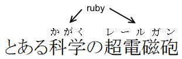
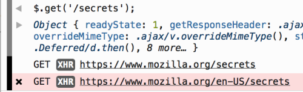
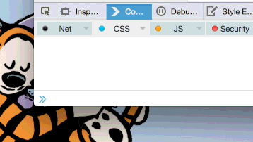

〈Trainspotting〉系列文章將重點提示 Firefox 最新版本的已上線功能。Firefox 現固定每六個星期釋出新版本，而我們稱此種模式為「Release trains」。
又已經六個禮拜了嗎？Firefox 38 已經正式上線了，而且還為 Web 平台新增了許多東西。下列是幾項重點：
若要完整了解相關變化與元件，可參閱《Firefox 38 版本說明》。
支援適應性圖像
Firefox 現可同時支援 <picture> 元素與 <img srcset> 了！另還有許多其他精采的文章可讓你熟悉新技術，開發者當然也能立刻享受自動補完函式庫 (Polyfill)。但 Firefox 38 另有需要注意的地方 ─ 只要是使用正確的媒體查詢 (Media queries)，就會載入適應性圖像 (Responsive image)，但目前尚未能對應到 Viewport 的縮放。此問題現已提交到這裡並持續追蹤，而且在 Firefox 的近期版本中就會解決。
可在 Web 的 Worker 中取得 WebSockets
Firefox 38 現在可於 Web 的 Worker 中執行程式碼，藉以開啟 WebSocket 連線。這對遊戲或其他協作式的 App 來說十分重要，即可於 UI 以外的獨立執行緒中，處理多人或即時的運算邏輯。
支援 HTML5 的 標記結構

不再需要笨重的函式庫或擴充套件，只要透過 <ruby> 標記結構 (Markup)，就能讓中文與日文網站達到更好的排版效果。
BroadcastChannel ─ 所有視窗都能 postMessage
如果你正用多個分頁或視窗建構 Web App，還要保持全部分頁或視窗同步，那麼一旦有任何事件與狀態改變，接收通知就很痛苦。BroadcastChannel 單純是用戶端的訊息傳遞 API，只要是在相同來源中執行的任何指令碼，都能透過此 API 傳遞訊息予其他的視窗或分頁。
// one tab
var ch = new BroadcastChannel('test');
ch.postMessage('this is a test');
// another tab
ch.addEventListener('message', function (e) {
alert('I got a message!', e.data);
});
// yet another tab
ch.addEventListener('message', function (e) {
alert('Avast! a message!' e.data);
});
12345678910111213
// one tabvar ch = new BroadcastChannel('test');ch.postMessage('this is a test'); // another tabch.addEventListener('message', function (e) { alert('I got a message!', e.data);}); // yet another tabch.addEventListener('message', function (e) { alert('Avast! a message!' e.data);});
開發者工具
來自於 XMLHttpRequest 的網路請求，現均標記於網頁主控台 (Web Console) 之中：

要取得網頁的數值嗎？你可發現網頁主控台現提供特殊的 copy 函式：

還沒完呢！
我還沒機會談談 Firefox 38 另外許多提升的功能與修正的錯誤，直接來看 Firefox 38 版本說明、開發者版本說明，或此版本修正的錯誤清單。
請繼續享受 Firefox 的絕妙經驗！